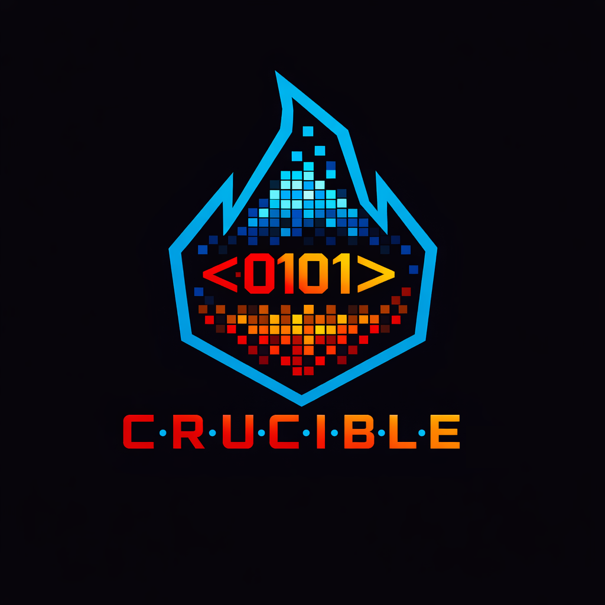

This page documents the architecture-evolution record for the INFO 539 term project — a 3-class document classification task (Pang & Lee 2004 corpus + a "not a review" label, evaluated by macro-F1). The goal was to traverse a principled progression of NLP classifiers covered in the course (Naive Bayes, Logistic Regression with TF-IDF and n-gram features, NBSVM, GloVe word embeddings, MEMM with Viterbi decoding, k-fold cross-validation, and ensemble methods), land on the highest-scoring configuration, then stress-test that configuration with epistemic and architectural follow-on experiments to determine whether further gains were available.
Eight stages were traversed: mass exploration → architecture selection → single-architecture ceiling test → cross-architecture ensembling → ensemble weight optimization (champion: Kaggle 0.93309) → boundary-targeted rescue (negative result) → architectural integration of MEMM features (negative result) → champion validation. Methodology compliance with course expectations was verified before submission — read the full compliance argument.

| C | — | Cross-architecture survey |
| R | — | Refinement on best-in-class |
| U | — | Uncertainty quantification |
| C | — | Calibrated |
| I | — | Information-theoretic |
| B | — | Bayes-rule-derived |
| L | — | Log-count-reweighted |
| E | — | Epistemic ensemble |
The right panel begins as the architecture map. Click any stage node to swap its full discussion in place; click ← back to map to return.
The submission of record is mk_6d_weight_swept, a
hyperband-tuned weighted ensemble of four diverse components. It scored
0.93309 on the Kaggle public leaderboard.
#stageN hash — copy or share to deep-link directly.Tested several architectures and feature engineering approaches in parallel. Established that vanilla TF-IDF + LR is competitive; Naive Bayes alone is not; GloVe alone underperforms; extending n-grams beyond bigrams gives marginal gains. Negation preprocessing (mk_5) improved results enough to carry forward into Stage 2.
| Mark | Architecture | Kaggle | In final ensemble? |
|---|---|---|---|
| mk_1 | Multinomial Naive Bayes baseline (CountVectorizer) | ~0.880–0.890 | no |
| mk_2 | Vanilla TF-IDF (1,2) + LR, class_weight=balanced, C=4.56 | ~0.913–0.920 | yes — ensemble weight 0.046 |
| mk_3 | Mean-pooled GloVe 100d + LR (no TF-IDF) | ~0.85–0.87 | no — dominated by mk_2 |
| mk_4 | TF-IDF (1,3) + LR — extended n-grams | ~0.91 | no — marginal over mk_2 |
| mk_5 | Negation-prefix preprocessing experiment | ~0.91–0.92 | negation logic carried into mk_6 |
mk_6 emerged as the dominant single-architecture model after combining the techniques from Stage 1. mk_7 added an independent generative-discriminative perspective via NBSVM (Wang & Manning 2012). Both are course-canonical and diverse enough to ensemble well later.
| Mark | Description | Key hyperparameters | Kaggle |
|---|---|---|---|
| mk_6 | "Kitchen sink" — sentiment tokenizer + negation + class balance |
TfidfVectorizer(1,2) with custom SENTIMENT_TOKEN_PATTERNnegation preprocessing ( _NEG suffix through punctuation boundary)class 2 oversample 1.3× C=27.19, min_df=5, max_features=150K, sublinear_tf=True |
0.92758 → 0.93121 (best Round-1 single-arch) |
| mk_7 | NBSVM (Wang & Manning 2012) |
TfidfVectorizer(1,2) + sentiment tokenizer NB log-ratio feature scaling alpha=1.0, beta=0.25 C=30.56, negation preprocessing |
~0.918 |
Stress-tested mk_6 with k-fold CV (mk_8) to confirm stability. Swept hyperparameters within architecture (mk_9). Tested whether dependency-parse features could push past the BoW+LR ceiling (mk_10). All three confirmed: the single-architecture BoW+LR ceiling is ~0.929–0.935 on this dataset. Wang & Manning 2012's finding about BoW+LR for sentiment classification was reproduced.
| Mark | Test | Outcome |
|---|---|---|
| mk_8 | 5-fold CV stability test on mk_6 | 0.929 val F1 ± 0.003 across folds — stable |
| mk_9 | Within-architecture hyperparameter sweep (50+ configs) |
Best variant: mk_9_53 — TF-IDF + GloVe stackStackedTfidfGlove transformer (TF-IDF hstack with mean-pooled GloVe 100d)C=33.13, ngram_range=(1,2), min_df=2, max_features=150K, sublinear_tf=False Kaggle ~0.926 — carried into ensembles as 4th component. |
| mk_10 | Dependency parse features added to TF-IDF | No improvement; structural features don't break the BoW+LR ceiling. |
Conclusion: single-architecture BoW+LR ceiling is ~0.929–0.935. Further gains require ensembling.
Mean-rule ensembling on diverse components broke the single-architecture ceiling. mk_6b refit all components on full data and saved their test probabilities — those probability files became the building blocks for every later ensemble.
| Mark | Ensemble description | Kaggle |
|---|---|---|
| mk_6b | Refit (mk_2 + mk_6 + mk_7) ensemble, mean-rule averagingp = (p_mk2 + p_mk6 + p_mk7) / 3 |
0.93170 |
| mk_6c | 4-way uniform: (mk_2 + mk_6 + mk_7 + mk_9_53) / 4Improved on mk_6b by adding GloVe-stack diversity. |
0.93201 |
Stage 0: 5,000 random Dirichlet(1,1,1,1) tuples × 1,000 val examples → keep top 1,500 Stage 1: 1,500 tuples × 3,000 val examples → keep top 400 Stage 2: 400 tuples × 7,000 val examples → keep top 100 Stage 3: 100 tuples × 10,546 val (full) → pick top 1
| Component | Weight |
|---|---|
| mk_2 | 0.0462 |
| mk_6 | 0.4919 (dominant) |
| mk_7 | 0.2000 |
| mk_9_53 | 0.2619 |
mk_6d_weight_swept.csv —
Kaggle 0.93309 ★After locking mk_6d, attempted to identify and rescue the hardest cases — documents where the ensemble was choosing between class 1 (positive) and class 2 (negative) with low margin. Three independent rescue methods were tried; all showed strong val signal but failed to transfer to Kaggle test. This is the core methodological finding of the project.
| Mark | Approach | Val F1 lift | Kaggle result |
|---|---|---|---|
| mk_6d_1 | Boundary-case identification (label-free criterion) | — (methodology only) | 5,135 val + 8,633 test boundary cases isolated |
| mk_6d_2 | Hand-coded sub-sentiment rescue rules | +0.003 | 0.93062 (−0.00247) |
| mk_6d_3 | Boundary feature dataset (28 features × val + test) | — (methodology only) | Documented val/test feature drift |
| mk_6d_4 | Trained classifier rescue (RF, GBM — not in syllabus) | +0.06 to +0.17 (5-fold CV) | Predicted catastrophic transfer; not submitted as primary |
| mk_6d_5 | MEMM + LR rescue stack (PA3 architecture, course-canonical) | +0.158 (boundary subset) | 0.92640 (−0.00669) |
Hypothesis: maybe boundary-targeting was the wrong architecture. Try integrating MEMM features into component training itself, before ensembling. Cross-fitted MEMM tag-sequence features on full training data; no leakage; honest k-fold validation. Three options tested — all failed to transfer.
| Variant | What's augmented | Val F1 | Kaggle result |
|---|---|---|---|
| Option A | mk_6 only — 16 cross-fitted MEMM features hstacked onto TF-IDF | 0.9340 | 0.92606 (−0.00703) |
| Option B | All four components (mk_2, mk_6, mk_7, mk_9_53) augmented | 0.9325 | not submitted (predicted ~0.927) |
| Option C | 4 augmented + 5th standalone mk_MEMM_LR component |
0.9323 | not submitted (predicted ~0.927) |
| Option 4 (locked-weights test) | mk_6d's exact weights, mk_6's test probas replaced with augmented version | — | 0.92767 (−0.00542) |
mk_MEMM standalone reached 0.7252
val F1 with only 16 features), do not transfer cleanly to Kaggle
test on this dataset.
Final exploration phase using non-MEMM strategies that don't optimize against val. Confirmed mk_6d's weights are at a robust optimum.
| Stage | Approach | Result |
|---|---|---|
| A — Threshold tuning | Per-class threshold offsets via grid search on val | NOT submitted — refinement bug + extreme offset (−0.21) flagged as overfit |
| B — Blend | 50/50 average of mk_6d-swept & mk_6c-uniform probabilities | 0.93243 (−0.00066) |
| C — Cross-fitted inference | Each component retrained 5× on 80% folds, test probas averaged | 0.93284 (−0.00025) — current public-score #2 |
| E — Corner-penalty re-sweep | Hyperband sweep with soft penalty on weights below 0.05 (λ=0.5) | Rediscovered mk_6d's exact winning weights to 4 decimal places. 0 predictions changed. |